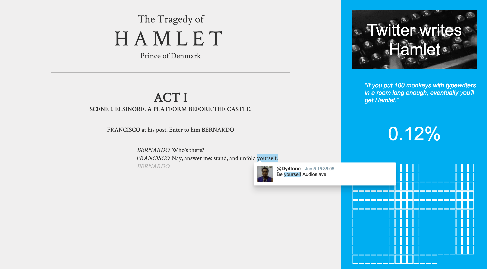

The infinite monkey theorem says that 100 monkeys randomly hitting keys on a typewriter will eventually type any text — Shakespeare included. This property of randomness has always fascinated me, and the internet has no shortage of monkeys.
The idea: somewhere across all the tweets ever posted, the complete text of Hamlet exists — word by word, scattered across millions of strangers' thoughts. Twitter Writes Hamlet makes that tangible. It watches Twitter in real time, waiting for someone to tweet each next word of the play. When it finds one, it captures it, linking back to the original tweet, showing that this word came from a real person, for their own unrelated reason.
It was a slow project by design. Hamlet is about 30,000 words long. Some words took minutes; others, days.
Sadly, it had to be shut down when the Twitter API went paid in 2023. The play was left unfinished — which, in its own way, feels right.